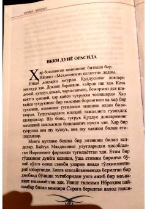

QIOna qalbining poklanishi va ilohiy yaqinlikni tasvirlovchi islomiy roman.
Kitob Quddus shahrida kechayotgan voqealarni tasvirlab, Hanna ismli ayolning farzand tug'ish lahzalarini ma'naviy va ilohiy nuqtai nazardan hikoya qiladi. Asarda tug'ilish jarayoni ikki dunyo — bu dunyo va u dunyo o'rtasidagi muqaddas bog'lanish sifatida talqin etiladi. Islomiy zikr va duolar orqali ona qalbining poklanishi va ilohiy yaqinlik mavzusi chuqur his-tuyg'u bilan ifodalangan.